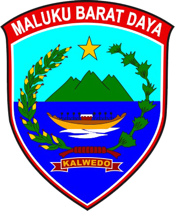

Kabupaten Maluku Barat Daya
Sarana penyampaian laporan dugaan pelanggaran, penyimpangan, maupun penyalahgunaan wewenang di lingkungan Pemerintah Kabupaten Maluku Barat Daya.
Laporkan PengaduanIdentitas pelapor dilindungi sepenuhnya.
Setiap laporan diproses secara profesional oleh Inspektorat.
Seluruh laporan tercatat dan terdokumentasi secara digital.
Whistleblowing System merupakan mekanisme penyampaian laporan atas dugaan pelanggaran yang terjadi di lingkungan pemerintahan. Melalui sistem ini masyarakat dapat berperan aktif dalam mendorong terciptanya tata kelola pemerintahan yang transparan, akuntabel, dan bebas dari praktik penyimpangan.
Masyarakat menyampaikan laporan melalui sistem pengaduan.
Inspektorat melakukan verifikasi awal terhadap laporan.
Laporan dianalisis dan ditindaklanjuti sesuai kewenangan.
Hasil penanganan laporan didokumentasikan secara elektronik.
Jika Anda mengetahui adanya dugaan penyimpangan, silakan sampaikan melalui sistem pengaduan berikut.
Buat Laporan